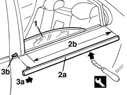
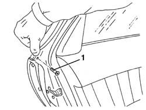
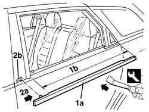

7010D26 rear side descending window glass scraper (outer) r r
- Path
- Procedures > 70 FITTINGS > 7010 PASSENGER COMPARTMENT REAR SIDE DOORS > 7010D rear side door window glasses > 7010D26 rear side descending window glass scraper (outer) r r
- Kind
- repair procedure (removal / refitting; the operation number is the code)
- Applies to
- all engines; all production periods
- Interactive page
- https://sloeber94.github.io/elrnDB-a156/en/#/3238669
Applies to: all engines; all production periods
 Removing
Removing
 Refitting
Refitting7010C44 interior handle panel - r r
7010E38 rear side door interior handle-r r
7010E34 inner or outer panel on rear side door frame - rr
7010D38 rear side door manual window mechanism handle/ring-nut r r
7010E22 grille for radio system on rear door panel (one) lh or rh - r r
5570T96 rear side speaker - r r
7010E11 lh or rh rear door inner panel - r+r with fouling parts removed
7010C10 rear door outer handle - r r with door panel removed
1. Lower the window completely.
2. Starting from the rear end, using the appropriate tool, remove the outer glass scraper trim (2a) along the section shown (2b).
 | Name | Country |
|---|---|---|
2a | Scraper blade | 1.823.014.000 |
3. Pull the glass scraper in the direction of the arrow (3a), removing it from the slot (3b).

Applies to: all engines; all production periods
Refitting
RemovingCheck that the outer weather strip is undamaged.
With the window lowered, insert the front retainer for the glass scraper trim in the slot in the door.
Fit the glass scraper, starting from the front.
7010C10 rear door outer handle - r r with door panel removed
7010E11 lh or rh rear door inner panel - r+r with fouling parts removed
5570T96 rear side speaker - r r
7010E22 grille for radio system on rear door panel (one) lh or rh - r r
7010D38 rear side door manual window mechanism handle/ring-nut r r
7010E34 inner or outer panel on rear side door frame - rr
Applies to: all engines; all production periods; only with equipment: Station Wagon
Removing
Refitting1. Open the rear door and undo the bolt.

Applies to: all engines; all production periods; only with equipment: Station Wagon
1. Starting from the rear end, using the appropriate tool, remove the outer glass scraper trim (1a) along the section shown (1b).
| Name | Country |
|---|---|---|
1 | Scraper blade | 1.823.014.000 |
2. Pull the glass scraper in the direction of the arrow (2a), removing it from the slot (2b).

Applies to: all engines; all production periods; only with equipment: Station Wagon
Refitting
RemovingCheck that the outer weather strip is undamaged.
Fit the glass scraper front retainer in the slot in the door.
Fit the glass scraper, starting from the front.
Tighten the bolt.
Check that the window slides properly.
Topics linked from this page (8)
- 5570T96 rear side speaker - r r
- 7010C10 rear door outer handle - r r with door panel removed
- 7010C44 interior handle panel - r r
- 7010D38 rear side door manual window mechanism handle/ring-nut r r
- 7010E11 lh or rh rear door inner panel - r+r with fouling parts removed
- 7010E22 grille for radio system on rear door panel (one) lh or rh - r r
- 7010E34 inner or outer panel on rear side door frame - rr
- 7010E38 rear side door interior handle-r r
Topics that link to this page (9)
- T02 WIND NOISE FROM THE REAR DOORS
- V06 REAR DOOR WATER PENETRATION
- 7010A Location of rear door wind noise
- 7010D12 fixed window glass element - r r
- 7010D14 rear side door descending window glass - r r with door panel (and mount frame) removed
- 7010D15 rear side door descending window glass-r r
- 7010D18 rear side door descending window glass channel r r
- 7010E50 rear side door pillar trim (one) lh or rh - r r
- 7205E38 Stripping REAR SIDE DOOR